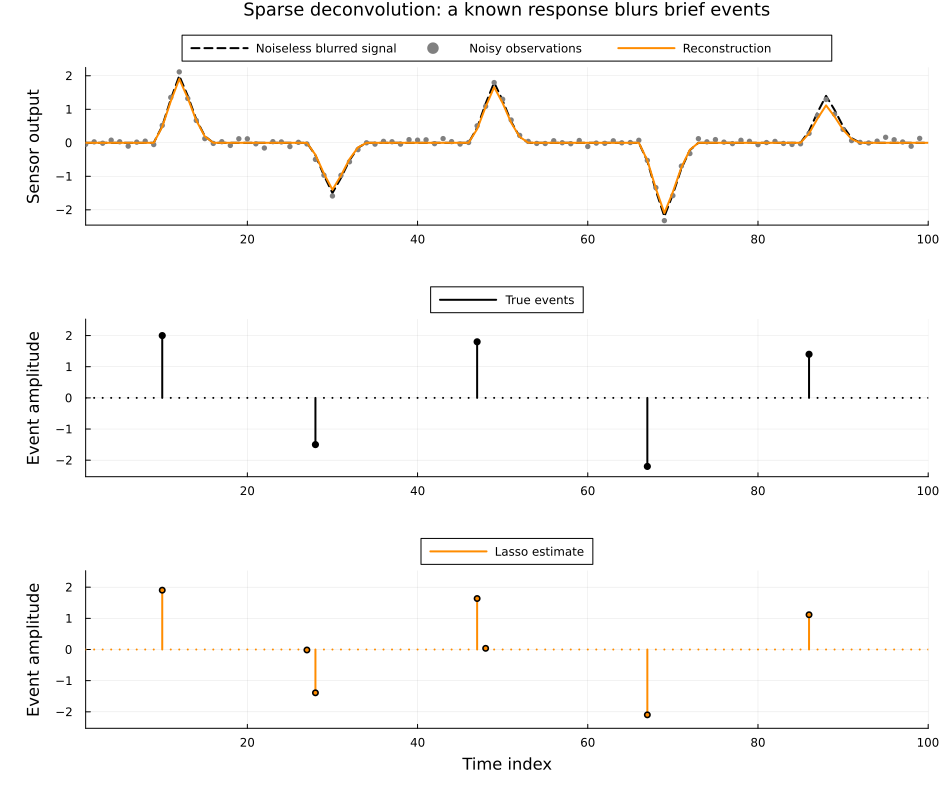

Sparse deconvolution and event recovery
A brief event can leave a long trace in a sensor: a sudden input is spread over several measurements by the instrument's response. Sparse deconvolution estimates when the inputs occurred and how large they were, given a known response kernel. Examples include pulses in a detector and short inputs to a dynamical system. Events here may have either sign.
We assume a linear, time-invariant response, measurements on an equally spaced grid, and additive independent Gaussian noise. Each column of the design is the response to one event, shifted to its possible occurrence time. This makes deconvolution a regression problem, with one potential coefficient per time point.

A reproducible experiment
We observe 100 time points, with five separated events and a six-point causal kernel. The amplitudes, noise standard deviation and seed are fixed. The kernel is known, rather than estimated from these observations. We use dense Float64 arrays throughout.
using LinearAlgebra, Random
using ProximalBase, ProximalSolversFor a kernel of length m, H[i,j] = h[i-j+1] when 1 ≤ i-j+1 ≤ m, and zero otherwise. An event at time j starts affecting the measurement at time j. Events outside the grid are zero (zero padding); there is no circular wraparound. We observe only the first n measurements, so the response of an event near the right boundary is truncated.
function convolution_matrix(h, n)
[1 <= i - j + 1 <= length(h) ? h[i - j + 1] : 0.0 for i in 1:n, j in 1:n]
end
n = 100
h = [0.25, 0.65, 1.0, 0.70, 0.35, 0.10]
H = convolution_matrix(h, n)
event_times = [10, 28, 47, 67, 86]
βtrue = zeros(n)
βtrue[event_times] = [2.0, -1.5, 1.8, -2.2, 1.4]
noise_sd = 0.06
seed = 408
yclean = H * βtrue
y = yclean + noise_sd * randn(Xoshiro(seed), n)
@assert y == yclean + noise_sd * randn(Xoshiro(seed), n)
@assert H isa Matrix{Float64} && y isa Vector{Float64};We fit the lasso objective
\[\widehat\beta = \operatorname*{arg\,min}_{\beta\in\mathbb R^n} \left\{\frac{1}{2n}\|y-H\beta\|_2^2+\lambda\|\beta\|_1\right\}.\]
Least squares alone can explain noise using many positive and negative events, especially when adjacent columns of H look similar. The absolute-value penalty encourages zero amplitudes, trading some observation fit for a simpler event sequence. There is no intercept: the assumed sensor baseline is zero. A nonzero baseline should be modeled or removed first. LeastSquaresLoss includes the factor 1/2; multiplying by 1/n gives this normalization.
At zero, the gradient is -H'y/n. Thus zero is optimal if λ ≥ λmax = ‖H'y‖∞/n. We choose λ = 0.06 λmax to illustrate an informative fit on this simulated data set. This fraction is an example setting, not a data-driven tuning procedure.
λmax = norm(H' * y, Inf) / n
λ = 0.06 * λmax
@assert isfinite(λmax) && λmax > 0
f = (1 / n) * LeastSquaresLoss(y, H)
g = NormL1(λ)
β = zeros(n)
result = solve!(β, f, g, CDSolver(order = :cyclic, momentum = false,
relative = false, tol = 1e-13, maxpasses = 20_000))
yfit = H * β;Blurred measurements and recovered events
The upper panel shows the observations and their reconstruction Hβ̂. The two lower panels share its time axis: one contains the true inputs, the other the estimated inputs. A broad peak in the observations can come from a single event. The signed impulse panels separate those inputs from the sensor's blurring. All fitted amplitudes are plotted, without a reporting threshold. The code marked #!jl runs in generated documentation, where Plots is available, and is skipped by the standalone script and ordinary example tests.
using Plots
observation_panel = plot(1:n, yclean; color=:black, linestyle=:dash, linewidth=2,
label="Noiseless blurred signal", ylabel="Sensor output", legend_columns=3, title="Sparse deconvolution: a known response blurs brief events")
scatter!(observation_panel, 1:n, y; color=:gray, markersize=3, markerstrokewidth=0,
label="Noisy observations")
plot!(observation_panel, 1:n, yfit; color=:darkorange, linewidth=2, label="Reconstruction")
amplitude_limit = 1.15 * max(maximum(abs, βtrue), maximum(abs, β))
truth_panel = plot(1:n, βtrue; seriestype=:sticks, color=:black, linewidth=2,
label="True events", ylabel="Event amplitude", ylims=(-amplitude_limit, amplitude_limit))
scatter!(truth_panel, event_times, βtrue[event_times]; color=:black, markersize=4, label=false)
estimate_panel = plot(1:n, β; seriestype=:sticks, color=:darkorange, linewidth=2,
label="Lasso estimate", xlabel="Time index", ylabel="Event amplitude",
ylims=(-amplitude_limit, amplitude_limit))
scatter!(estimate_panel, findall(!iszero, β), β[findall(!iszero, β)];
color=:darkorange, markersize=3, label=false)
event_figure = plot(observation_panel, truth_panel, estimate_panel; layout=(3, 1), link=:x,
xlims=(1, n), size=(940, 800), legend=:outertop, titlefontsize=12,
left_margin=7Plots.mm, bottom_margin=4Plots.mm)
savefig(event_figure, "sparse_deconvolution.svg")
nothingThe fitted impulses need not equal the true ones: lasso shrinks amplitudes, and noise can create small extra events. The next summary distinguishes recovery of the inputs from agreement with the measured output. A small observation error alone is insufficient evidence of accurate event recovery in an inverse problem.
We display events with |β̂ⱼ| > 0.15. This is a presentation threshold in amplitude units, not the optimizer's exact support, a significance test, or a guarantee of event detection. The independent optimality check below uses the original coefficients, including tiny ones.
reporting_threshold = 0.15
reported_events = findall(b -> abs(b) > reporting_threshold, β)
largest_events = sortperm(abs.(β); rev = true)[1:8]
observation_rmse = norm(yfit - y) / sqrt(n)
relative_event_error = norm(β - βtrue) / norm(βtrue)
println("True events (time => amplitude): ", collect(zip(event_times, βtrue[event_times])))
println("Largest estimated events: ", collect(zip(largest_events, round.(β[largest_events]; digits=3))))
println("Events above presentation threshold ", reporting_threshold, ": ", reported_events)
println("λ / λmax = ", λ / λmax, "; observation RMSE = ", observation_rmse,
"; relative event-amplitude error = ", relative_event_error)True events (time => amplitude): [(10, 2.0), (28, -1.5), (47, 1.8), (67, -2.2), (86, 1.4)]
Largest estimated events: [(67, -2.098), (10, 1.904), (47, 1.636), (28, -1.39), (86, 1.116), (48, 0.038), (27, -0.016), (1, 0.0)]
Events above presentation threshold 0.15: [10, 28, 47, 67, 86]
λ / λmax = 0.06; observation RMSE = 0.07719027485120224; relative event-amplitude error = 0.09296557298622792Check the convolution convention
This tiny example is separate from fitting. The event at time 1 has response [1,2,3]; the event -2 at time 4 contributes only its first two response values, because the window ends at time 5. Adding them gives [1,2,3,-2,-4], with no response wrapped to the beginning.
hsmall = [1.0, 2.0, 3.0]
bsmall = [1.0, 0.0, 0.0, -2.0, 0.0]
Hsmall = convolution_matrix(hsmall, 5)
manual_convolution = [sum(hsmall[k] * bsmall[i-k+1]
for k in 1:min(i, length(hsmall))) for i in 1:5]
@assert manual_convolution == [1.0, 2.0, 3.0, -2.0, -4.0]
@assert Hsmall * bsmall == manual_convolution;Independently check numerical accuracy
Coordinate descent reports converged when coefficient changes become small. We check optimality separately. With grad = H'(Hβ-y)/n, the lasso KKT conditions require gradⱼ = -λ sign(βⱼ) at a nonzero coefficient and |gradⱼ| ≤ λ at a zero coefficient. The largest violation measures stationarity directly from the data. Dividing by λ makes its numerical scale easier to read; this is an optimization diagnostic, not a statistical confidence statement.
function deconvolution_kkt(H, y, β, λ)
grad = H' * (H * β - y) / length(y)
maximum(iszero(β[j]) ? max(abs(grad[j]) - λ, 0.0) :
abs(grad[j] + λ * sign(β[j])) for j in eachindex(β))
end
objective = sum(abs2, yfit - y) / (2n) + λ * sum(abs, β)
kkt = deconvolution_kkt(H, y, β, λ)
@assert result.minimizer === β && result.converged
@assert length(yfit) == n && all(isfinite, yfit) && all(isfinite, β)
@assert isfinite(objective) && isfinite(kkt)
@assert isapprox(objective, result.minimum; rtol = 1e-10, atol = 1e-14)
@assert kkt / λ <= 1e-8
println("Independent objective = ", objective, "; KKT residual / λ = ", kkt / λ,
"; coordinate passes = ", result.passes)Independent objective = 0.02611062860679814; KKT residual / λ = 3.8271208585064077e-13; coordinate passes = 100As a control, fit above λmax. The margin avoids the rounding ambiguity at exactly λmax, and all coefficients should be zero. We check both its objective and its KKT residual. Neither this control nor the numerical checks assert exact noisy event recovery.
λzero = 1.01 * λmax
βzero = zeros(n)
zero_result = solve!(βzero, f, NormL1(λzero),
CDSolver(order = :cyclic, momentum = false, relative = false, tol = 1e-13))
@assert all(iszero, βzero)
@assert deconvolution_kkt(H, y, βzero, λzero) / λzero <= 1e-12
@assert isapprox(sum(abs2, y) / (2n), zero_result.minimum; rtol = 1e-10)
println("Above λmax: all estimated event amplitudes are zero.")Above λmax: all estimated event amplitudes are zero.Statistical limitations
- Nearby events have overlapping responses and correlated design columns. Distinguishing them can be difficult even when an optimizer has solved the lasso accurately. We spaced the simulated events apart to make the three panels easy to interpret.
- Larger penalties remove weak events and shrink surviving amplitudes. Smaller penalties can fit noise with spurious events. Choosing a penalty in an application needs a noise model or validation appropriate to its temporal structure.
- A wrong kernel, an unmodeled baseline, correlated noise, or events outside the observation window can bias the reconstruction. Late events are less fully observed: their columns have smaller norms because the kernel tail is missing. We do not standardize these physically meaningful columns or compensate for boundary effects.
- The estimate allows signed amplitudes, including when the true events are positive. It does not impose nonnegativity or deliver confidence intervals for event times.
- Explicit dense storage grows quadratically with the observation length. This small example illustrates the existing lasso API, without an FFT or an implicit operator.
What we learned
A known response kernel turns sparse event recovery into a lasso with shifted kernel columns. The reconstructed measurements describe fit in observation space; the impulses describe the inferred inputs. Independent objective and KKT checks establish numerical accuracy, while the kernel assumptions, regularization and noise govern statistical accuracy. See Lasso and Supported problems for the existing solver combinations. To reproduce the figure, build the documentation with its docs/ environment; running this script alone performs the calculation and numerical checks without Plots.